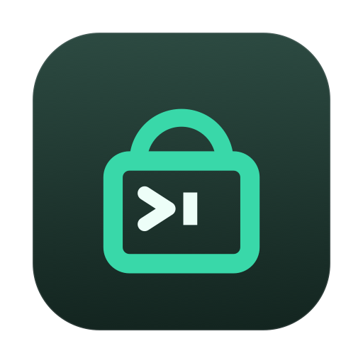

Free · macOS 14+Step away and your machine is locked — nobody can touch it. But your build keeps compiling, your agent keeps running, your upload keeps uploading. One click, then go.
You lock the screen and go to lunch. The screen is secure — and forty minutes later the machine quietly idles to sleep, suspending everything you left running.
You come back to a compile that stopped somewhere in the middle of your break.
A long-running agent or test suite frozen mid-task, with an hour wasted.
So you leave it unlocked instead — and now anyone walking past has your machine.
Pick per session from the menu, or set a default.
The default. Holds the whole time you are away and releases the moment you come back. Predictable, and never cuts a job short.
Watches what is actually running and releases once everything goes quiet — so the Mac sleeps on its own after the job is done.
A fixed stretch, when you know roughly how long you will be.
A tool that keeps a Mac awake has to be impossible to forget about.
Every session has a hard ceiling you set — twelve hours by default. A forgotten session cannot keep a machine awake indefinitely.
Refuses to arm, and stands down mid-session, when the battery drops below your threshold. Respects Low Power Mode.
The hold belongs to the process. If it is force-quit or crashes, normal sleep returns immediately on its own.
Come back to a short summary: how long it held, what was running, and whether anything was still going when it ended.
Shut the laptop and keep going. One-time admin approval, reverted automatically when the session ends.
No camera, no Accessibility, no screen recording. It asks for nothing except admin — and only for lid-closed mode.
caffeinate keeps the Mac awake but does not lock it, does not know when your work is done, and has no safety ceiling. AFK locks first, then holds — and can end itself when the job finishes.
WakeHold is automatic and always on: it infers from activity whether to hold, and may let go when a process looks idle. AFK is deliberate and session-based — you arm it, it locks, and it holds regardless until the condition you chose. They work well together.
Yes. It uses the same lock macOS uses, so your password is required to get back in. It changes nothing about the lock itself — only whether the machine may fall asleep behind it.
The sleep hold is owned by the process, so it dies with it and normal sleep resumes immediately. The one setting that outlives the app — lid-closed mode — has a watchdog that restores it.
It can, since the machine stays awake — that is the point. Hence the battery floor and the hard time limit, both on by default.
No. The display sleeps immediately. Only system sleep is prevented, so you get a dark, locked machine that is still working.